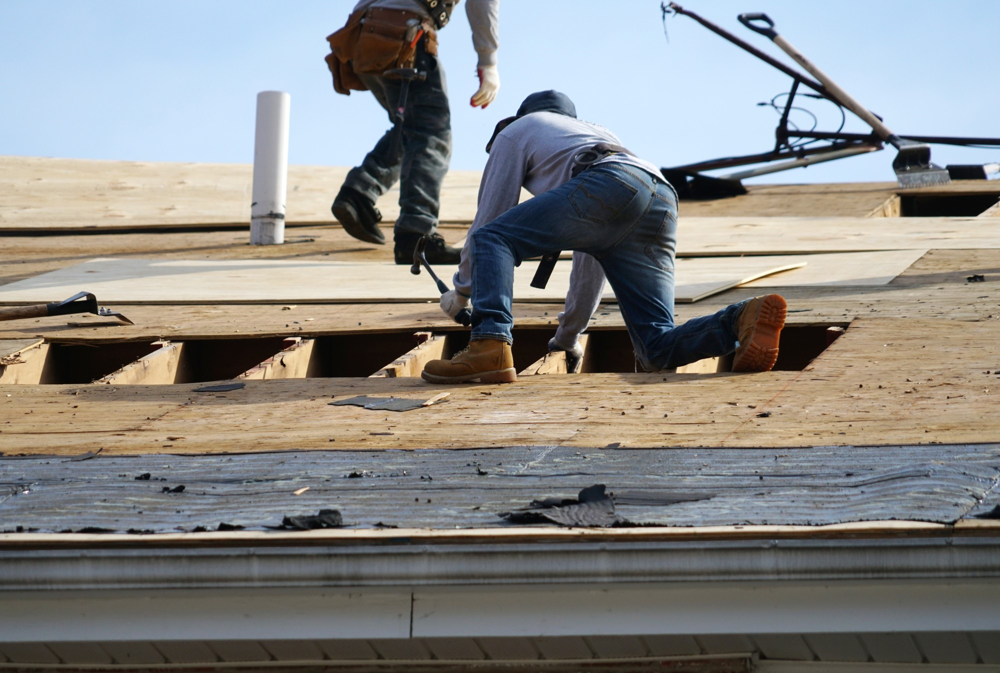
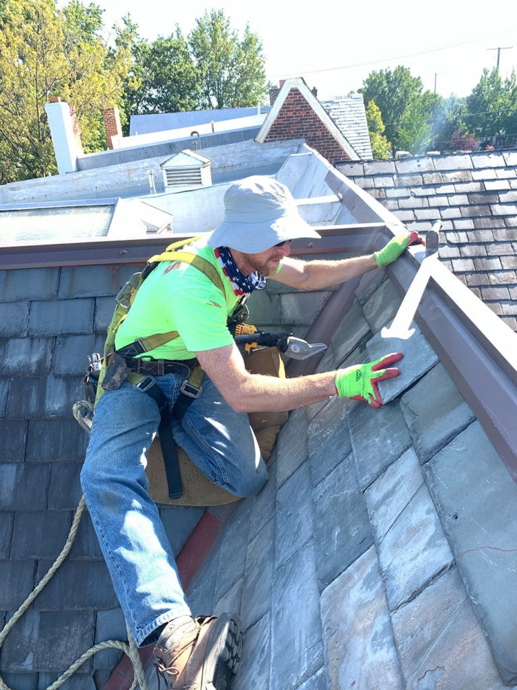
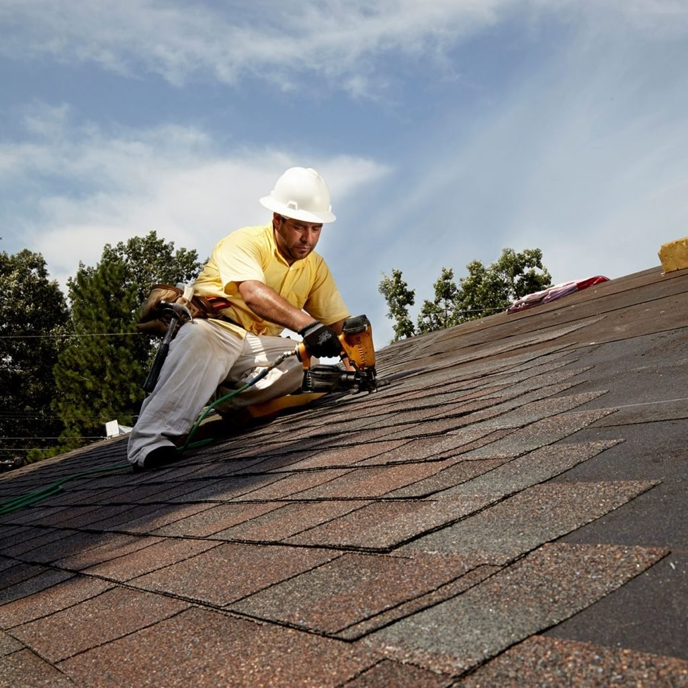

News
Services
Roofing Repair Sewell, New Jersey
About Us
News

How to Get a Durable and Stylish Roof Without Breaking the Bank?
Making regular maintenance a priority is key to getting a durable and stylish roof without breaking the bank.. A well-maintained roof can last for years, so you don't have to worry about costly repairs or replacements (like having to buy an entirely new roof).
Posted by
on 2023-07-13

How to Quickly Find the Right Roofing Solution for Your Home
Finding the right roofing solution for your home can be a daunting task.. But with the proper research and knowledge, you can quickly find the one that fits your needs! (First off,) it's important to review any final proposals and contracts closely, as these documents will contain vital information about the project.
Posted by
on 2023-07-13
Roof Maintenance Tips and Techniques
Maintaining your roof in preparation for extreme weather conditions is essential.. Doing (so) can help prevent costly damage and keep your home safe!
Posted by
on 2023-07-13
Roofing Materials and Options
Roofing is a critical part of any home's structure.. It not only protects your home from the elements, but it can also help to keep your energy costs down! (Negation) There are many options when it comes to roofing materials and selecting the right one can be tricky.
Firstly, asphalt shingles are very popular because they come in a variety of colors and styles, are relatively affordable and easy to install.
Posted by
on 2023-07-13

What Is the Most Durable Roofing Material for Any Climate?
Roofing is a very important topic for any building, especially in different climates.. It is vital to select the most durable material to protect the structure from harsh weather conditions! (Unfortunately), there are many options making it difficult to choose the best one.
Posted by
on 2023-07-13
What is the Best Way to Upgrade Your Home's Roofing?
Upgrading your home's roofing is an important task, and should be done properly to ensure its safety and longevity.. There are a few key safety precautions you must take when upgrading your roof!
Posted by
on 2023-07-13
Old Posts
New Posts